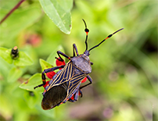
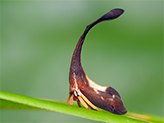
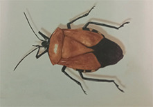
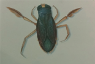

Постельные клопы, клопы-хищнецы, клопы-вонючки, травяные клопы, клопы-солдатики, ягодные клопы, клопы-черепашки... Существует около 80 тыс. видов клопов, или полужестокрылых насекомых.Всех их объединяет налицие сосущего ротового аппарата. |
||
Как питаются клопы ?Клопы питаются жидкой пищей ,всасывая её хоботком, в который превратились их челюсти. Некоторые клопы питаются соками растений, другие - тканями и кровью животных и человека. Ножки этих клопов покрыты тончайшими волосками, с их помощью клоп способен удерживаться на поверхности своей жертвы во время трапезы. |
За что клоп-хищнец получил своё название ?Затаившись в густой растительности, клоп-хищнец терпеливо поджидает свою жертву. Этот клоп получил своё название за то, что питается другими насекомыми. Он протыкает их покровы хоботком и убивает жертву, впрыскивая в её тело ядовитую слюну. Слюна к тому же обладает способностью растворять ткани добычи, превращая их в питательный бульон, который хищник и высасывает через некоторое время хоботком. При случае голодные клопы-хищнецы даже нападают друг на друга! |
|
Едят ли клопы насекомых ?Тропические клопы-засадчики охотятся на насекомых. Благодаря совершенному камуфляжу, они незаметны, пока караулят свою добычу. Клопы хватают жертву передними лапами, длина которых значительно больше длины их тела. |
клоп-хищнец  | |
Кусаются ли постельные клопы ?"Детка спит, сомкнувши очи, клоп постельный кушать хочет..." Ксожалению, постельные клопы на самом деле кусаются! Днём они прячутся в матрицах и щелях кроватей, но ночью отправляются на поиски мирно спящих людей, ориентируясь при этом на тепло тела жертвы. К счастью, постельные клопы не переносят опасных заболеваний, но их укусы вызывают зуд. |
Как клопы маскируются ?Многие клопы используют искусство маскирвоки, чтобы защититься от врагов. Горбатки питаются соками растений и внешне очень похожи на мало привлекательные для хищников растительные колючки. Вырост на их теле такой острый, что может проткнуть кожаную обувь! |
|
Почему воняет клоп-вонючка ?Поставьте себя на место маленького клопа-вонючки, которого хочет съесть птица. Как бы вы поступили, чтобы избежать подобной участи? Наверное, обзавелись бы средствами обороны. И у клопа естьтайное оружие - это жидкостьс отвратительным запахом. Достаточно одной её струйки, и хищник дважды подумает, прежде чем вновь напасть на клопа! |
Горбатка  | |
| клоп-вонючка | Могут ли клопы жить в воде ?Многие клопы приспособились к водной среде обитания. Водные клопы-гладыши плавают в её толще, используя пару длинных ножек как вёсла, что делает их похожими на миниатюрные лодочки с гребцами. Они преследуют и ловят головастиков и мальков. Водяные клопы белостомы так велики, что могут поймать и съесть лягушку или рыбу покрупнее. Вблизи берегов прудов можно увидеть водомерок, скользящих по поверхности воды. Они охотятся на личинок комаров, прокалывая их покровы острым хоботком. |
|
ФАКТЫПостельный клоп не превышает в длину 5 мм, но он может всего за 15 минут выпить количество крови, которое в 4 раза превышает массу его тела! |
клоп-гладыш | |
| Такие разные букашки | Бронированные жуки | |
| Содержание | ||